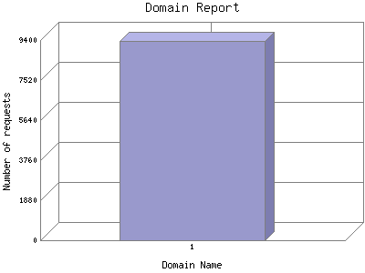

Analog 5.24
Analog 5.24 Report Magic for Analog 2.13
Report Magic for Analog 2.13The Domain Report identifies the top origins of visitors to this site. This is determined by the suffix of their domain name. Use this information carefully as this is based on where their domain name is registered and may not always be an accurate identifier of the actual geographic location of this visitor. For example, while most .com domain names are from the United States, there are a growing number of .com domain names that exist outside the United States.
This report shows all results. This report is sorted by number of requests.

| Domain Name | Number of requests | Number of page requests in the last 7 days | |
|---|---|---|---|
| 1. | [unresolved numerical addresses] | 9,338 | 597 |
This report was generated on February 18, 2007 02:24.
Report time frame February 4, 2007 20:17 to February 18, 2007 03:34.
| Web statistics report produced by: | |
| Analog 5.24 | Report Magic for Analog 2.13 |